Partitions
Aperçu du travail d’écriture : œuvres originales, ciné-concerts et arrangements. Chaque exemple associe autant que possible la couverture à la première page, afin de donner une vision plus concrète de la partition.
Travail d'édition
Les couvertures et extraits sont là pour donner une idée du format, de la présentation et de l’écriture. Pour une œuvre précise, je peux transmettre selon les projets un conducteur, des parties séparées ou un extrait.
Demander une partitionLes fichiers complets ne sont pas systématiquement mis en ligne. Tout est en revanche protégé à la SACEM. Prendre contact pour les versions disponibles, l’effectif, le niveau et les conditions d’utilisation.
Œuvres originales

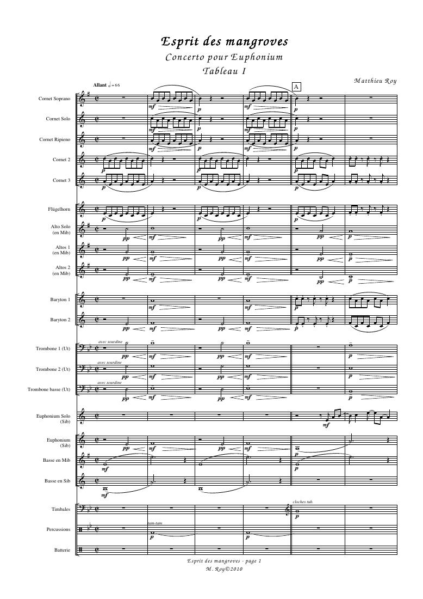
Concerto pour Euphonium
2009 · euphonium et Brass Band
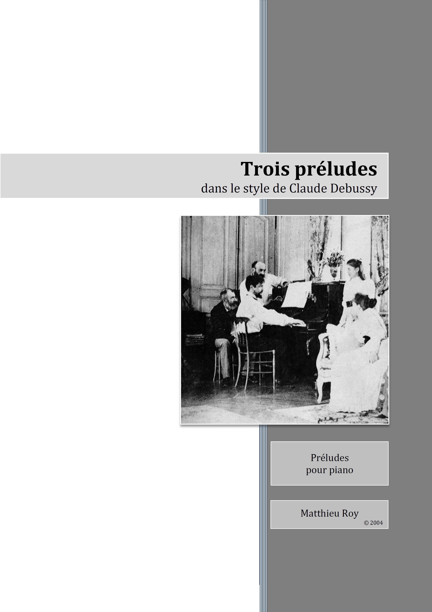
Trois préludes pour piano
Composition · piano · 2003
Ciné-concert
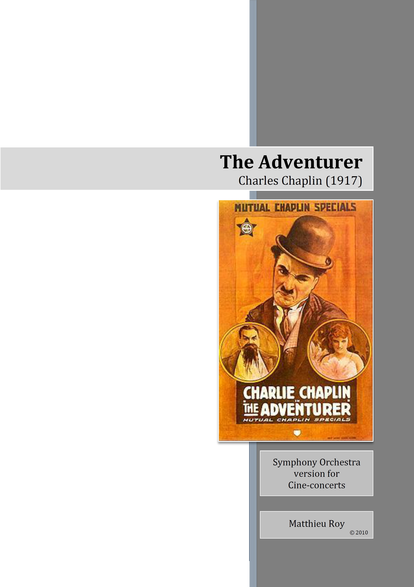
The Adventurer
Charlie Chaplin · composition
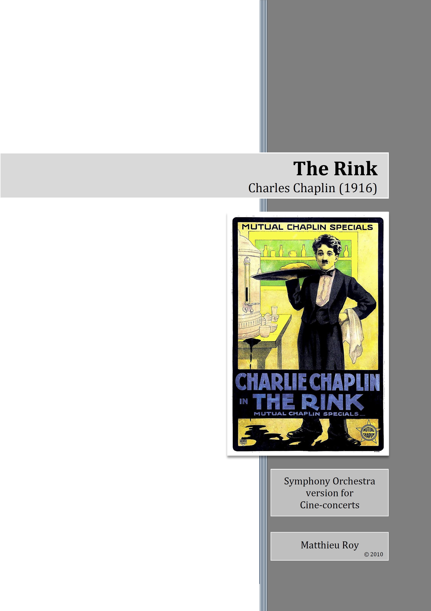
The Rink
Charlie Chaplin · composition
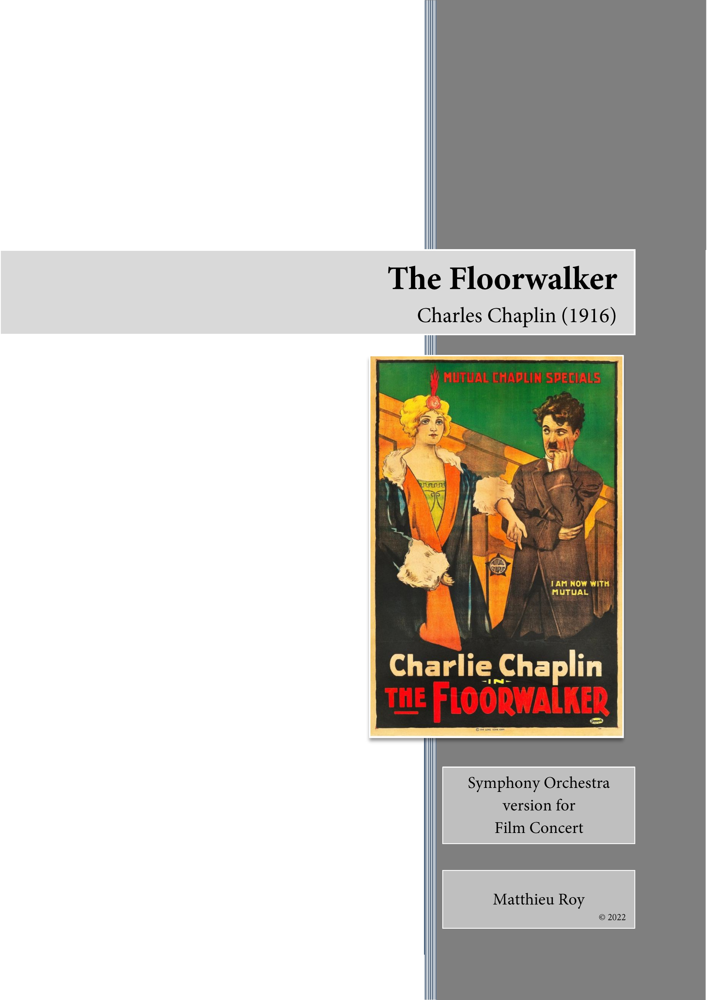
The Floorwalker
Charlie Chaplin · composition
Arrangements pour orchestres de conservatoire
Un répertoire d’arrangements pensé pour les orchestres de conservatoire, avec des conducteurs adaptés à une pratique d’ensemble de 2e cycle.
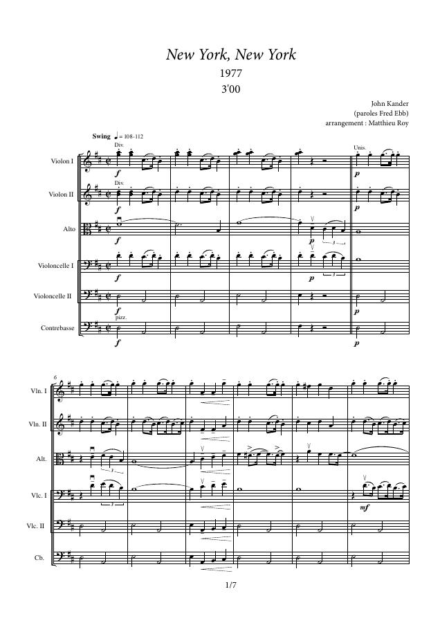
New York, New York
John Kander
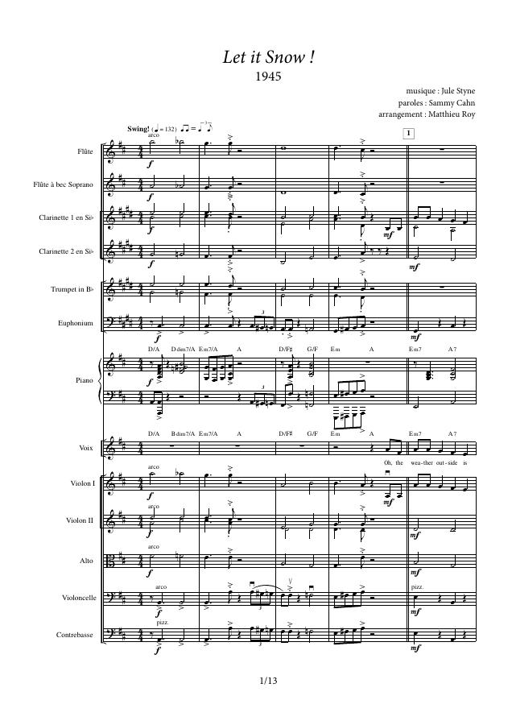
Let It Snow
Jule Styne
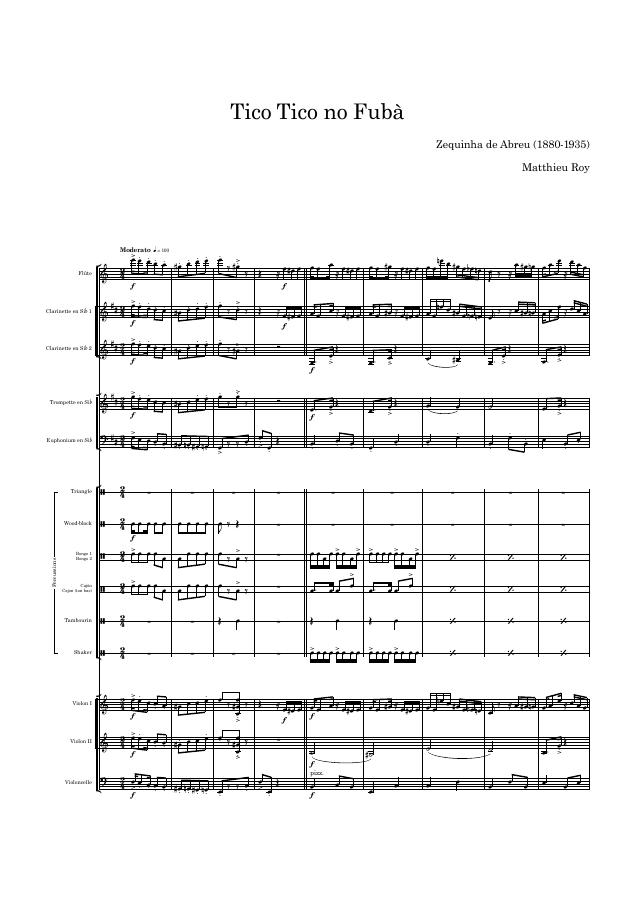
Tico Tico no Fubà
Zequinha de Abreu
Cette sélection ne représente qu’une partie des arrangements réalisés : beaucoup d’autres arrangements existent, pour différentes formations et selon des configurations sur mesure.
Arrangements de comédies musicales
Pour soprano et orchestre d’harmonie.
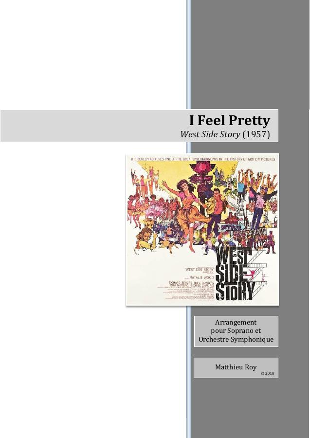
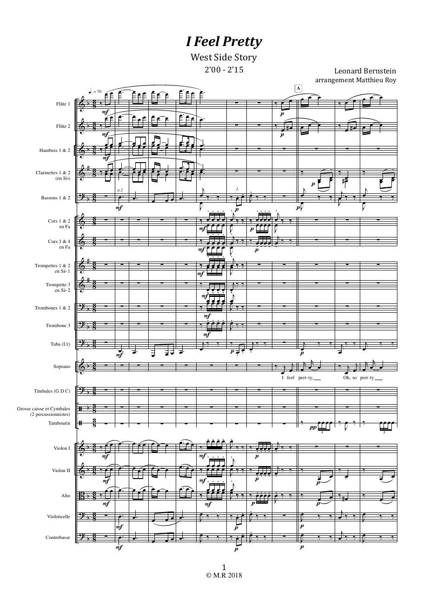
I Feel Pretty
Leonard Bernstein · 2018
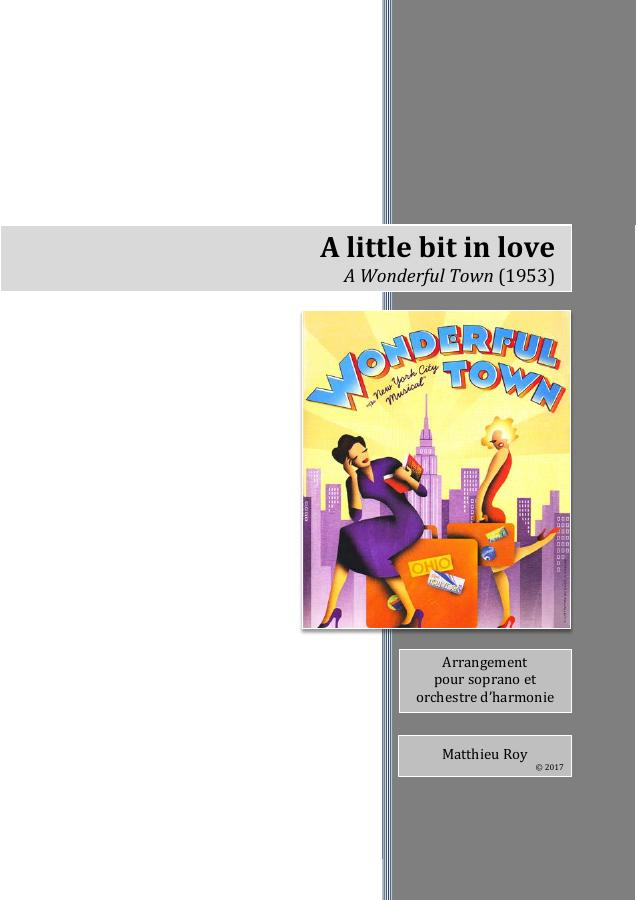
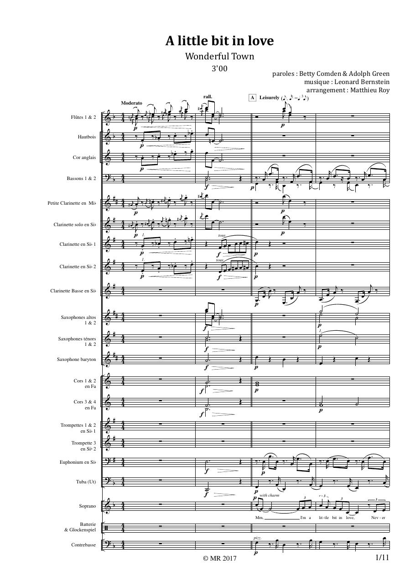
A Little Bit in Love
Leonard Bernstein · 2017
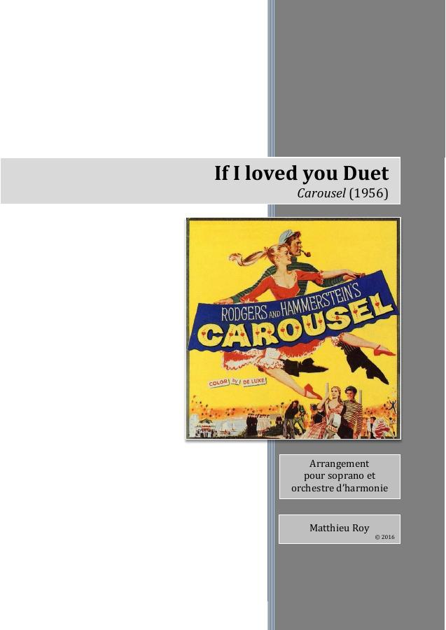
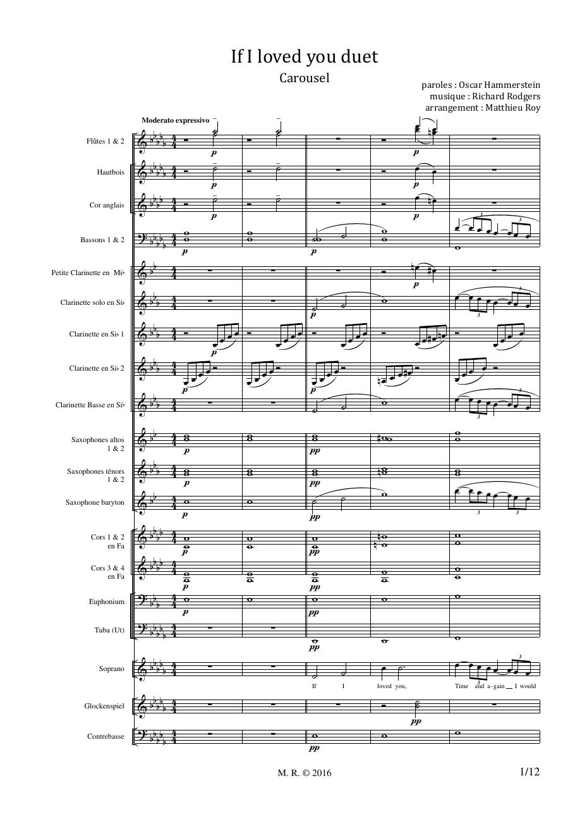
If I Loved You Duet
Richard Rodgers · 2016
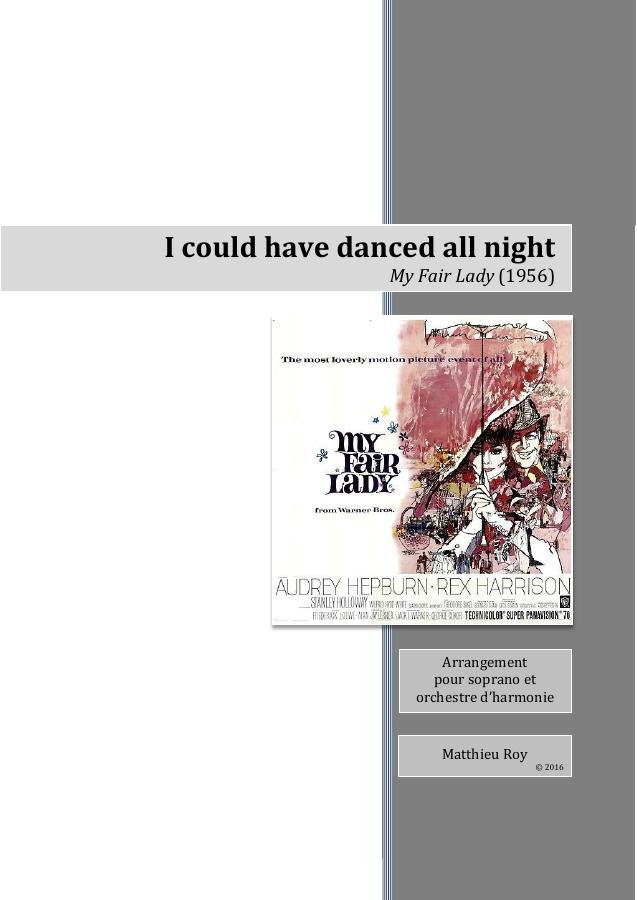
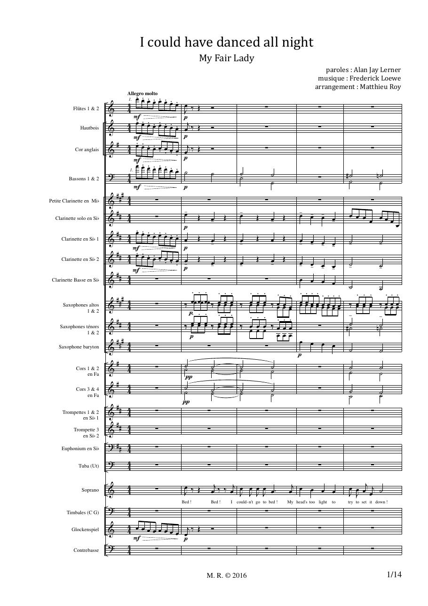
I Could Have Danced All Night
Frederick Loewe · 2016